编码代理开始装“技能包”
同一天里多个项目都在给编码代理加装可复用的能力层：安全审计技能把审计流程写成分阶段步骤与校验脚本，设计技能用主题和检查规则约束输出，云厂商则把服务知识打包成官方插件。共同点是把提示词沉淀成文件、命令与可校验的产物，让代理行为更容易复用和复查。
security-audit-skillhallmarkimpeccableagent-toolkit-for-aws
每天看见开源项目的升温轨迹。两种榜单、项目解读与历史对比，整理成可阅读、可下载的图文。
把编码智能体变成分阶段安全审计员
Cloudflare 开源的智能体技能包，把安全审计拆成侦察、按覆盖清单排查、候选验证、结构化输出、独立复核与报告中立化六个阶段，结论分为已确认、待验证与已否决三档并接受校验。
README 说明多次审计可累加，用旧账本补齐缺口并复核变更过的源码；这类“可机读产物＋独立复核”的做法，可能让审计结果更容易接入 CI 和人工复查流程。
昨日 +2,264 · 今日 +2,878 · 创建 130 天 · MIT
查看 cloudflare/security-audit-skill ↗本地运行的语音克隆与配音工作台
开源的本地语音工具，覆盖声音克隆、按描述设计音色、视频配音、听写转写与有声书制作，支持 646 种语言；桌面端可管理本地语音模型，也提供本地 API 与 MCP 供智能体调用。
README 强调工作流跑在自己的硬件上、远程服务可选，并提到可选图形加速；对隐私敏感或不想按量付费的创作者值得观察，音质仍取决于所选引擎与模型。
昨日对比待积累 · 创建 199 天 · AGPL-3.0
查看 debpalash/VoiceStudio ↗让 AI 生成的页面不像 AI 做的
面向 Claude Code、Cursor、Codex 等编码工具的设计技能：从 48 套主题里挑材质，按页面要完成的任务来布局，再用浏览器检查常见的机器味痕迹，最后由独立上下文的评审给出结论。
项目把检查分成硬性底线、模型惯性、工艺细节三档，并支持按网址重构和只读审计；这种“先禁再放”的规则集可能比一次性提示更稳定，主题化输出也存在趋同风险。
昨日对比待积累 · 创建 181 天 · MIT
查看 Nutlope/hallmark ↗统一模型入口，用流量调路由
开源的 OpenAI 兼容网关与路由，把托管、自带密钥和本地模型收在同一个接口后，可按用户与智能体控制可用模型和预算，并用生产流量训练更省钱或更快的路由。
README 给出的路径是先接网关、采集 OpenTelemetry 轨迹再训练项目级路由，还提供实验性的桌面流量捕获；训练收益是否成立，取决于真实流量是否有代表性。
昨日对比待积累 · 创建 123 天 · Apache-2.0
查看 experientiallabs/experiential ↗给编码智能体的设计语言与检查器
给 AI 编码代理用的设计技能，含初始化、评审、打磨、动画、排版等 24 条命令，以及 62 条不依赖大模型的确定性检测规则，用来识别模板化字体、渐变与卡片嵌套等通病。
它把产品事实写进 PRODUCT.md，并与设计系统分开记录，还支持在浏览器里实时迭代；规则化检测降低了主观评审成本，但固定清单是否会限制风格创新值得观察。
昨日 +619 · 今日 +1,092 · 创建 344 天 · Apache-2.0
查看 pbakaus/impeccable ↗面向多种编码代理的运行时增强套件
自称智能体运行时优化系统，围绕技能、直觉、记忆、安全与研究优先的开发流程，为 Claude Code、Codex、Cursor、OpenCode 等提供插件和配套包，并提醒只从官方渠道安装。
项目通过 npm 包、GitHub App 与插件等多种形态分发，安全提示写得比较醒目；这类“代理操作系统”功能面很广，实际收益与权限边界可能需要在具体项目里逐项验证。
昨日对比待积累 · 创建 281 天 · MIT
查看 affaan-m/ECC ↗把多家免费额度聚成一个接口
用统一的 /v1 端点聚合多家提供商的免费额度与自定义 OpenAI 兼容端点，带按请求选路、限流时自动切换、密钥加密存储和用量跟踪，并提供桌面与移动客户端。
README 标注仅供个人实验，模型目录通过签名源更新，免费安装与付费版本存在目录时间差；各家免费额度条款变化频繁，长期可用性值得继续观察。
昨日 +715 · 今日 +675 · 创建 188 天 · MIT
查看 tashfeenahmed/freellmapi ↗开箱即用的桌面 AI 智能体客户端
开源桌面与移动客户端，把 Claude Code、Codex 等多个代理框架和模型混在一个智能体里，可读写本机文件、操作浏览器与手机，并支持记忆、技能、定时任务与 MCP 接入。
仓库只包含客户端，后端在另一个私有仓库；可选择自带密钥或复用已有订阅。多框架混跑、任务中途切换模型的实际稳定性，还需要更多公开使用反馈来观察。
昨日对比待积累 · 创建 95 天 · Apache-2.0
查看 makecindy/cindy ↗终端里的 Gemini 智能体命令行
谷歌开源的终端 AI 代理，可查询与修改大型代码库、用多模态输入生成应用、以自然语言排查问题，也能接入 MCP 服务器并在脚本中非交互运行，提供多个发布通道。
README 顶部已注明该工具被 Antigravity CLI 取代，也未针对最新模型优化；仓库仍在更新，新用户选型时可能需要先确认官方推荐路径与后续维护节奏。
昨日对比待积累 · 创建 556 天 · Apache-2.0
查看 google-gemini/gemini-cli ↗用强化学习驱动的小型双足机器人
Pollen Robotics 开源的小型双足机器人控制仓库：在嵌入式板卡上以 50Hz 回路驱动十五个舵机，运行由 MuJoCo 与 PPO 训练、导出为 ONNX 的策略，可走路、翻滚、起身与取物。
控制代码、签名更新与回滚机制、仿真器都公开，训练侧另有一个仓库；对学习 sim2real 的团队是少见的完整样本，但硬件门槛与本体获取方式值得先确认。
昨日对比待积累 · 创建 89 天 · Apache-2.0
查看 pollen-robotics/microduck ↗把 Arc 侧栏搬上真 Chromium 的浏览器
macOS 上的免费开源 Chromium 浏览器，把地址栏收进侧边栏、支持最多三栏分屏和视频浮窗，兼容 Chrome 扩展与数据迁移，内置 uBlock Origin，同步走自己的 iCloud。
README 明列尚不支持的部分：流媒体数字版权未签、仅支持 Apple Silicon、部分钥匙串功能待系统放行；去谷歌化之后的兼容性表现值得持续观察。
昨日对比待积累 · 创建 128 天 · GPL-3.0
查看 mantrakp04/ardia ↗本地优先的多代理桌面工作台
本地优先的桌面应用，为 Codex、Claude Code、Grok、Gemini、Cursor 等代理分别分配工作区与会话，提供消息队列、文件传输、内嵌浏览器与代理之间的通信。
README 明确标注为开发预览，代理默认拥有完整的文件与命令权限且不逐条确认；这种高权限设计用起来省事，是否适合团队环境需要谨慎评估后再决定。
昨日对比待积累 · 创建 74 天 · 许可证未标注
查看 nightly-labs/openbot ↗让编码代理会用 AWS 的官方插件包
AWS 官方提供的 MCP 服务器、技能与插件集合，覆盖服务选型、CDK 与 CloudFormation、无服务器与容器、数据分析、Bedrock 智能体构建以及运维安全等场景。
安装方式覆盖 Claude Code、Codex、Cursor、Devin、Kiro 等多个代理，插件按领域拆分；官方维护降低了配置成本，但插件与 MCP 的实际权限范围仍值得逐项确认。
昨日对比待积累 · 创建 186 天 · Apache-2.0
查看 aws/agent-toolkit-for-aws ↗自托管的家庭事务一体面板
可自托管的家庭管理 PWA，把任务、日历、预算、膳食与食谱、购物清单、健康与文档放在一起，模块之间可互相流转，用容器跑在自家服务器或 NAS 上。
README 强调单一数据库文件、无追踪、较低内存占用，并给出多种家用平台的部署方式；对想摆脱多项订阅的家庭有吸引力，长期维护与小团队支持情况值得观察。
昨日对比待积累 · 创建 216 天 · MIT
查看 ulsklyc/yuvomi ↗双栏安卓文件管理器，偏重 APK
面向 Android 的双栏 Material 文件管理器，定位是 MT Manager 的开源替代：支持双窗格操作、书签与历史、正则与内容搜索、批量重命名，以及 ZIP/APK 内编辑和签名对齐。
功能清单围绕 APK 修改场景展开，包含冲突处理和文件类型识别等细节；这类工具上手不难但影响面大，使用前值得确认签名与系统权限上的限制。
昨日对比待积累 · 创建 125 天 · GPL-3.0
查看 AbdurazaaqMohammed/MP-Manager ↗懂代理状态的终端窗口管理器
用 Go 写的终端复用器与窗口管理器，提供模态操作、BSP 平铺、多工作区与会话守护，并让窗格里的编码代理上报状态、互相发消息，支持 kitty 图形协议。
README 提示存在冒充账号，并说明只有官网与本仓库为官方来源；把代理状态收进一个统一收件箱的思路较新，跨机器与会话恢复的实际体验值得观察。
昨日 +131 · 今日 +190 · 创建 414 天 · MIT
查看 Gaurav-Gosain/tuios ↗不依赖容器的进程级沙箱
Anthropic 开源的研究预览工具，用系统原生沙箱机制加代理式网络过滤，对任意进程施加文件系统、网络与本地套接字限制，可用来约束 MCP 服务器和代理行为。
文档明确标注为早期预览、配置格式可能变化，并强调文件与网络隔离必须同时启用；作为可复用的库和命令行工具，它与各类代理集成的成熟度值得观察。
昨日对比待积累 · 创建 371 天 · Apache-2.0
查看 anthropics/sandbox-runtime ↗给自主代理用的受控运行环境
NVIDIA 开源的智能体运行时：每个代理在隔离沙箱中运行，内核层限制文件访问、系统调用与网络出口，凭据只在发往获批端点时注入，策略变更前会先做形式化检查。
新版带来稳定的发布节奏与新隔离原语，安装需要容器或虚拟化支持；内核级强制加策略预检的组合较重，实际部署成本与平台兼容性值得观察。
昨日对比待积累 · 创建 243 天 · Apache-2.0
查看 NVIDIA/OpenShell ↗围绕 pi 智能体构建的轻量 IDE
JetBrains 孵化项目，把 pi 编码代理放进一个真正的 IDE：每个 git 工作树独立工作区、多个并发会话、以规格文档作为项目知识，并集成本地终端、评审注释与 PR 流程。
README 说明下一步是完整扩展支持，让 IDE 按使用习惯生成工具；工作区隔离与规格驱动的思路较清晰，但早期项目的稳定性与生态成熟度值得观察。
昨日对比待积累 · 创建 110 天 · Apache-2.0
查看 JetBrains/thinkrail ↗基于倪海厦体系的紫微斗数排盘引擎
开源紫微斗数排盘引擎，含排盘算法、四化系统、格局知识库与古籍原文数据，并按体系发布大规模解读数据集，支持按年份下载，另有在线体验站点。
README 详细说明按原话与古籍逐句校正、删除查无出处的引文，并注明六亲判断的局限；代码与数据分开许可，数据集体积庞大，使用前值得核对授权范围。
昨日对比待积累 · 创建 178 天 · MIT
查看 Renhuai123/ziwei-doushu ↗同一天里多个项目都在给编码代理加装可复用的能力层：安全审计技能把审计流程写成分阶段步骤与校验脚本，设计技能用主题和检查规则约束输出，云厂商则把服务知识打包成官方插件。共同点是把提示词沉淀成文件、命令与可校验的产物，让代理行为更容易复用和复查。
另一条线索是自建入口：语音工作台把模型跑在本机，模型网关把多家免费额度与自有密钥收成一个接口，桌面代理把多个框架混在同一会话里。它们都强调数据与密钥留在自己手里，同时承认远程服务仍然可选，适合愿意维护一台机器来换取控制权的用户。
当代理被允许读写文件、发起网络请求，隔离就变成独立的基础设施：一个项目用系统原生机制约束任意进程，另一个用内核强制与策略预检管理代理机群，终端窗口管理器则把代理状态和确认收进一个入口。它们都在回答同一个问题——给多大权限，以及怎样随时收回。
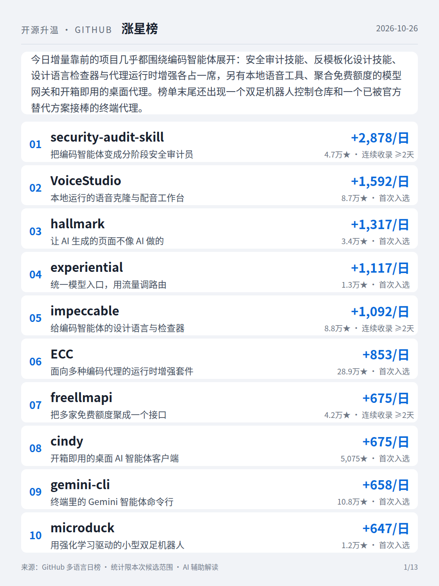
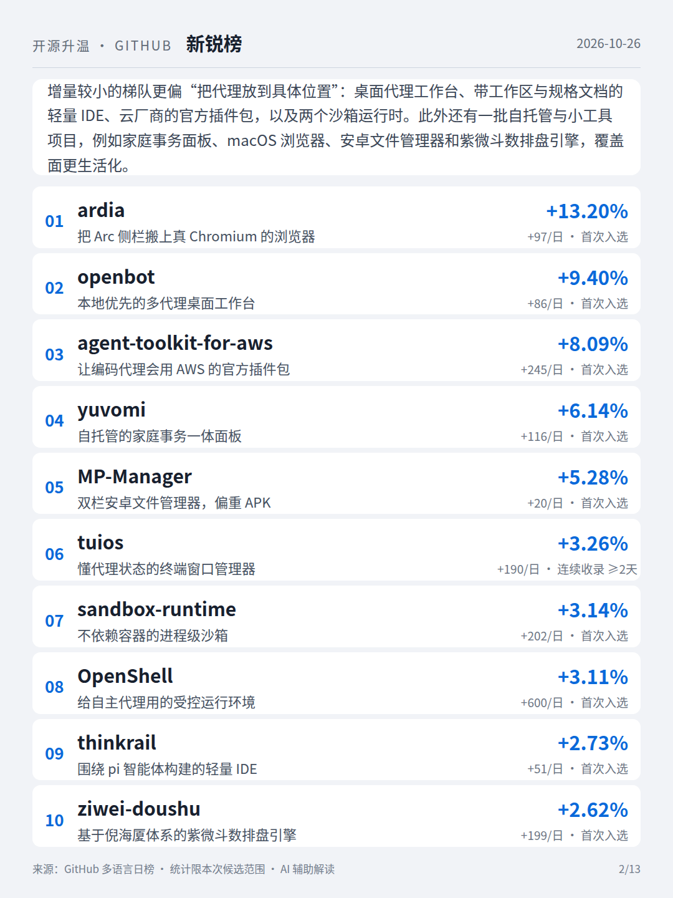
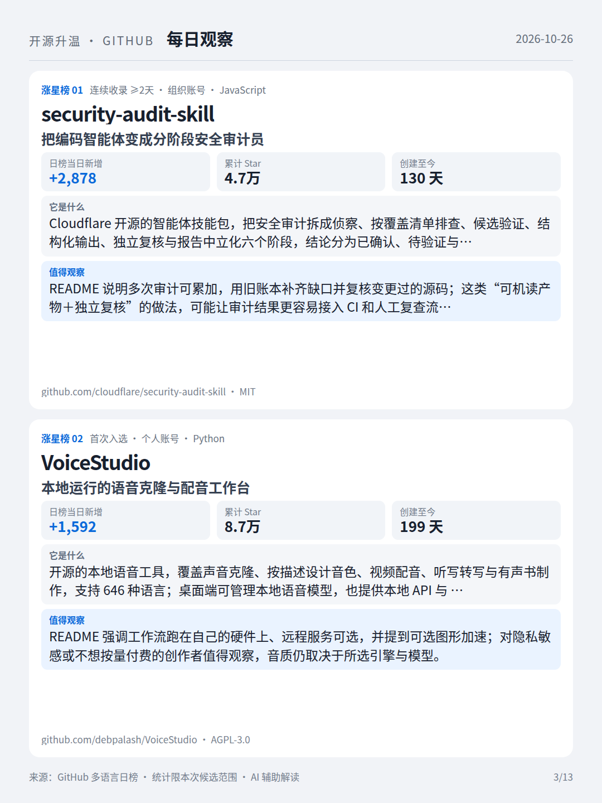
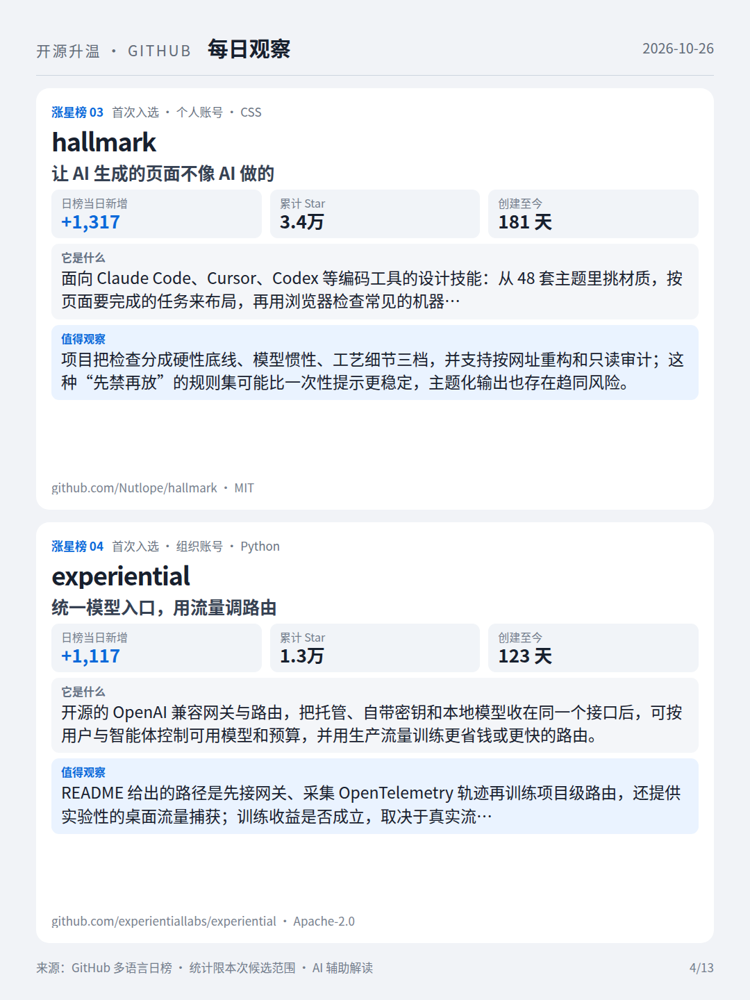
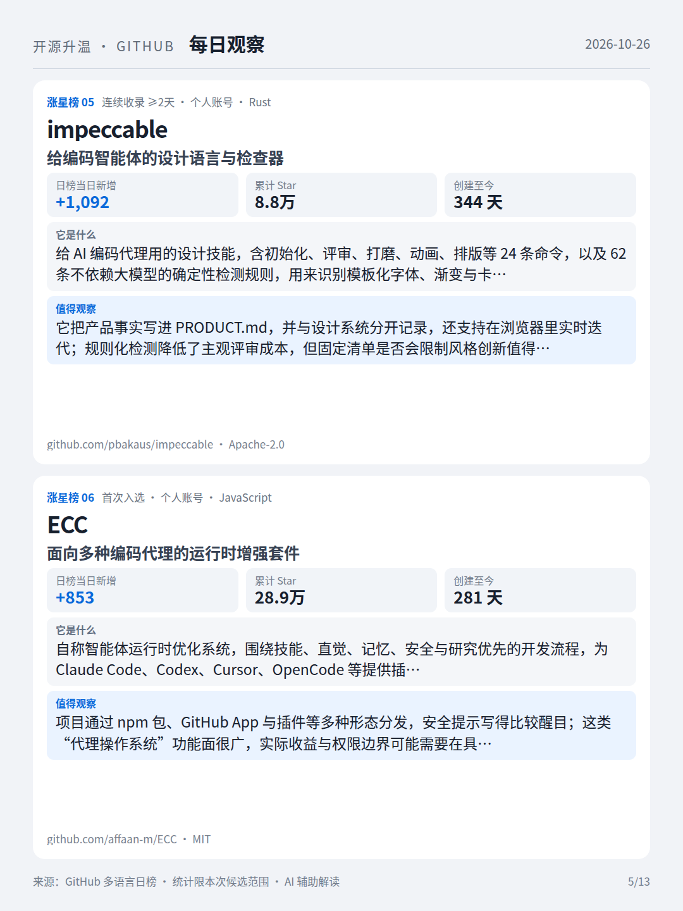
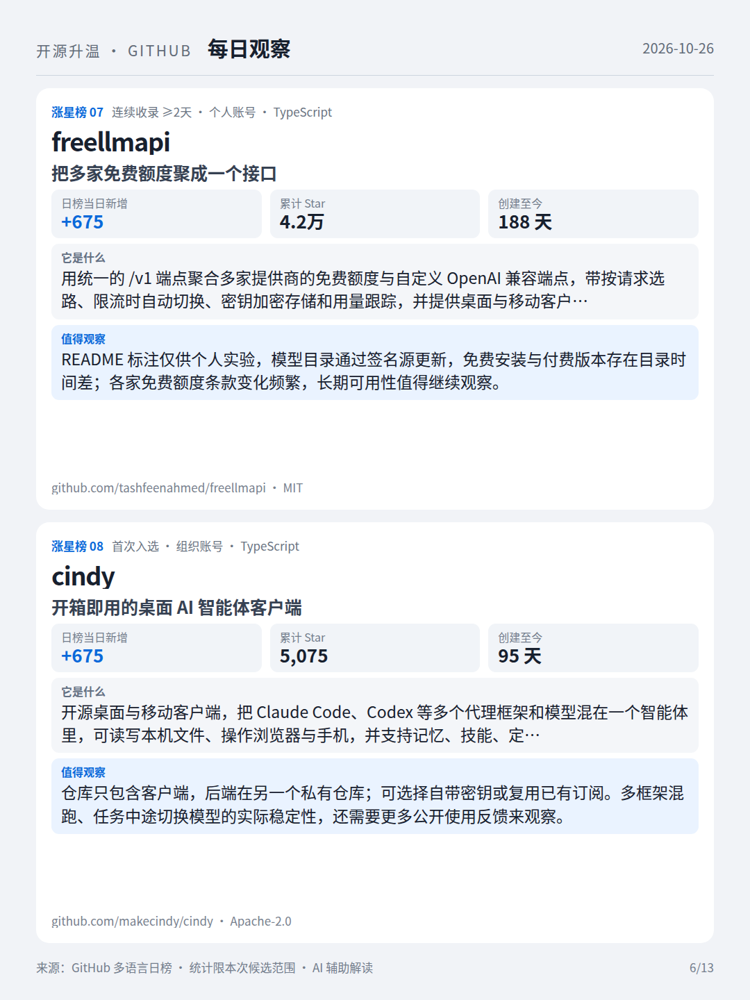
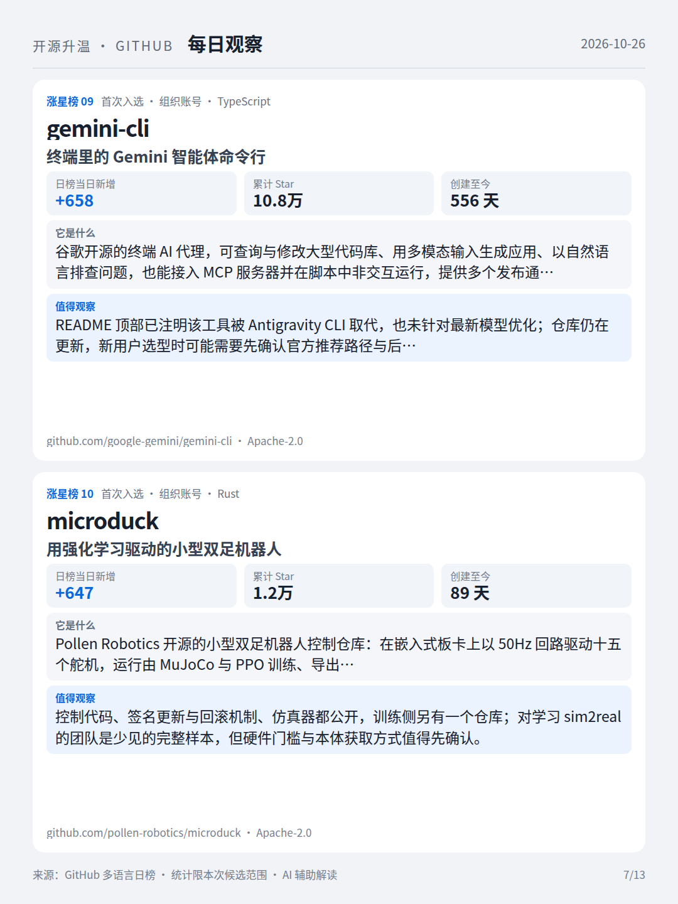
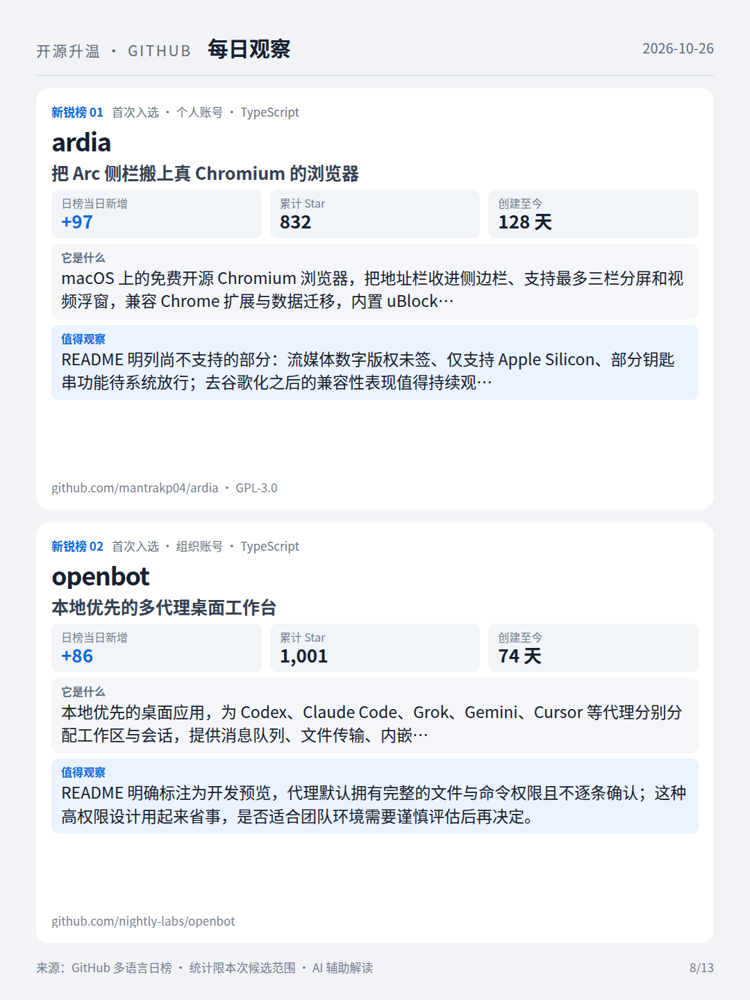
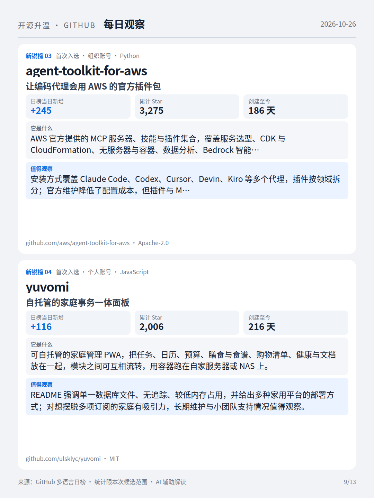
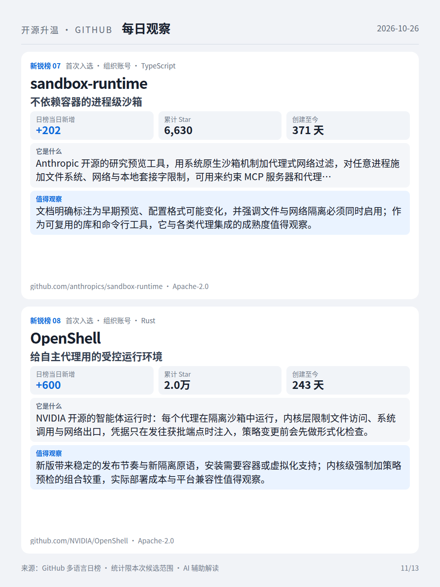
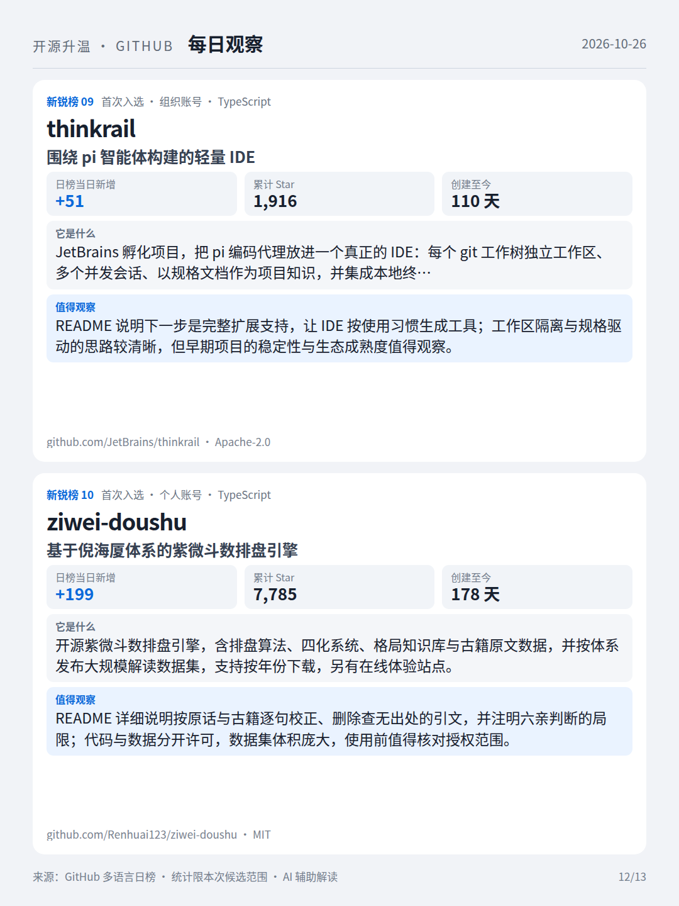